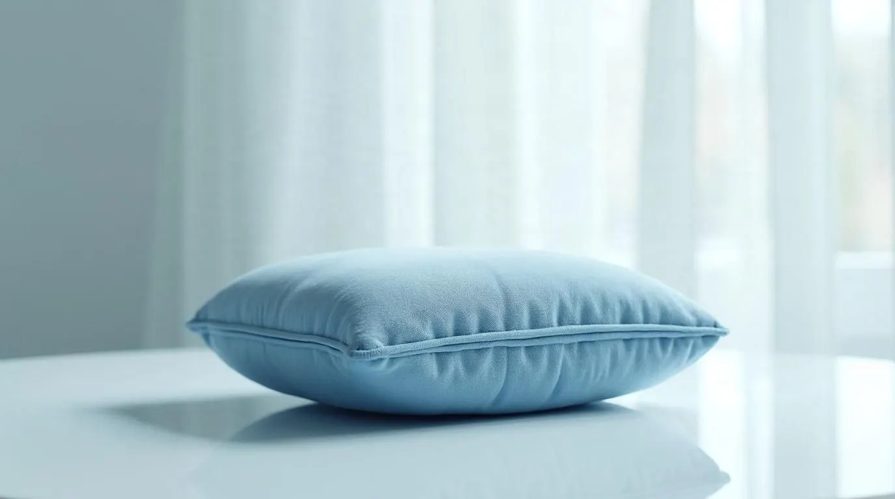

손발이 차다고 하시면 언제 어디가 차가운지와 함께 잠, 소화, 생리 주기, 긴장 정도를 묻고, 손가락 색이 변하거나 피로·체중 변화가 함께 있으면 다른 원인 확인을 먼저 안내합니다.
여쭙는 것
- 손과 발 중 어디가 더 차가운가요?
- 겨울에만 그런가요, 여름에도 그런가요?
- 손가락 색이 하얗거나 파랗게 변한 적이 있나요?
생활에서 해 볼 것
- 목, 손목, 발목을 따뜻하게 감싸기
- 찬 음료를 줄이고 따뜻한 물 마시기
- 오래 앉아 있을 때 한 시간마다 발목 돌리고 일어나 걷기
한의원에서 함께 살필 것
- 손발 냉감이 이어지는 경우 진맥, 복진과 함께 잠과 소화, 생리 주기를 살핍니다.
- 긴장이 많아 손발이 차가워지는 경우 생활 리듬을 함께 살핍니다.
- 혈액 순환이나 갑상선 검사가 필요하다고 판단되면 다른 의료기관을 안내합니다.
먼저 확인이 필요한 신호
- 손가락이 하얗거나 파랗게 변했다가 돌아오는 일이 반복되는 경우
- 손발에 상처가 잘 낫지 않는 경우
- 체중 변화, 심한 피로, 추위를 유난히 타는 증상이 함께 있는 경우
손발이 차다고 하시면 손과 발 중 어디가, 언제, 어떻게 차가운지와 함께 잠, 소화, 생리 주기, 긴장 정도를 묻습니다. 손발이 찬 것 자체보다 함께 따라오는 불편이 무엇인지가 몸 상태를 이해하는 중요한 단서가 되기 때문입니다. '저는 원래 손발이 차요'라는 말은 진료실에서 아주 자주 듣는 이야기입니다.
왜 이런 불편이 생길 수 있나요
- 추울 때 몸은 중심의 온기를 지키려고 손발 쪽 혈관을 좁히는데, 이 반응이 예민한 분은 손발이 쉽게 차가워질 수 있습니다.
- 긴장하거나 스트레스를 받을 때도 손발이 차가워지는 분들이 있습니다.
- 활동량과 근육량이 적거나, 끼니를 거르고 찬 음료를 자주 드시는 생활도 영향을 줄 수 있습니다.
- 빈혈이나 갑상선 기능 변화처럼 다른 원인이 함께 있는 경우도 있어 구분이 필요합니다. 한의학에서는 몸의 온기를 소화, 잠, 대소변과 함께 살핍니다.

먼저 이렇게 여쭙니다
- 손과 발 중 어디가 더 차가운가요?
- 겨울에만 그런가요, 여름에도 그런가요?
- 손가락 색이 하얗거나 파랗게 변한 적이 있나요?
- 소화, 잠, 생리 주기에 불편이 함께 있나요?
- 하루에 얼마나 걷고 움직이시나요?
일상에서 먼저 해 볼 수 있는 것
- 목, 손목, 발목을 따뜻하게 감싸기
- 찬 음료를 줄이고 따뜻한 물 마시기
- 오래 앉아 있을 때 한 시간마다 발목 돌리고 일어나 걷기
- 잠들기 전 미지근한 물로 족욕하기
- 끼니를 거르지 않기

한의원에서 함께 살필 수 있는 경우
- 손발 냉감이 이어지는 경우 진맥, 복진과 함께 잠과 소화, 생리 주기를 살핍니다.
- 긴장이 많아 손발이 차가워지는 경우 생활 리듬을 함께 살핍니다.
- 혈액 순환이나 갑상선 검사가 필요하다고 판단되면 다른 의료기관을 안내합니다.
좋은꿈참사랑한의원에서는 먼저 손발이 차가운 모습과 생활을 충분히 듣고, 진맥과 복진, 필요하면 설진으로 몸 상태의 단서를 모읍니다. 그 결과를 바탕으로 침, 뜸·온열, 한약 상담 가운데 상태에 맞는 방법을 정하고, 검사가 먼저 필요하다고 판단되면 다른 의료기관을 안내합니다. 귀가 전에는 집에서 해 볼 생활 요령을 함께 정리해 드립니다.
이렇게 기록해 오시면 상담이 쉬워집니다
- 손발이 특히 차가운 시간대와 계절
- 손가락 색이 변한 적이 있다면 그때 사진
- 생리 주기, 잠든 시간과 깬 횟수, 소화 상태
- 최근 건강검진의 빈혈·갑상선 관련 결과

이런 증상은 먼저 확인이 필요합니다
- 손가락이 하얗거나 파랗게 변했다가 돌아오는 일이 반복되는 경우
- 손발에 상처가 잘 낫지 않는 경우
- 체중 변화, 심한 피로, 추위를 유난히 타는 증상이 함께 있는 경우
진맥·설진·복진은 몸 상태를 이해하기 위한 단서이며 하나만으로 결론을 내리지 않습니다. 복용 중인 약은 처방한 의사와 상의 없이 줄이거나 끊지 않습니다.
한눈에 보는 표
| 구분 | 핵심 |
|---|---|
| 여쭙는 것 | 손과 발 중 어디가 더 차가운가요? 겨울에만 그런가요, 여름에도 그런가요? |
| 생활에서 해 볼 것 | 목, 손목, 발목을 따뜻하게 감싸기 찬 음료를 줄이고 따뜻한 물 마시기 |
| 한의원에서 함께 살필 것 | 손발 냉감이 이어지는 경우 진맥, 복진과 함께 잠과 소화, 생리 주기를 살핍니다. 긴장이 많아 손발이 차가워지는 경우 생활 리듬을 함께 살핍니다. |
| 먼저 확인이 필요한 신호 | 손가락이 하얗거나 파랗게 변했다가 돌아오는 일이 반복되는 경우 손발에 상처가 잘 낫지 않는 경우 |
자주 묻는 질문
손발이 찬 것도 진료를 받나요?
네. 함께 있는 불편과 생활 리듬을 살펴 이야기합니다.
수족냉증은 체질 때문인가요?
체질도 한 가지 요소지만 생활 습관과 다른 원인도 함께 살핍니다.
족욕은 얼마나 하면 되나요?
미지근한 물에 10~15분 정도로, 피부가 붉어질 만큼 뜨겁게 하지 않는 것이 좋습니다. 당뇨로 발 감각이 둔하면 온도를 손으로 먼저 확인하세요.
진료 시간은 어떻게 되나요?
좋은꿈참사랑한의원은 평일 09:30~20:00(점심 13:00~14:00), 토·일·공휴일 09:30~15:00에 진료합니다.
이 글은 일반적인 건강 정보이며 개인의 진단이나 치료를 대신하지 않습니다. 증상이 있거나 복용 중인 약이 있다면 진료를 통해 확인하세요. 치료 효과는 개인마다 다를 수 있습니다.
좋은꿈참사랑한의원은 재진 때 지난번 이야기부터 이어서 여쭙니다. 진료시간과 예약은 오시는 길에서 확인하세요.